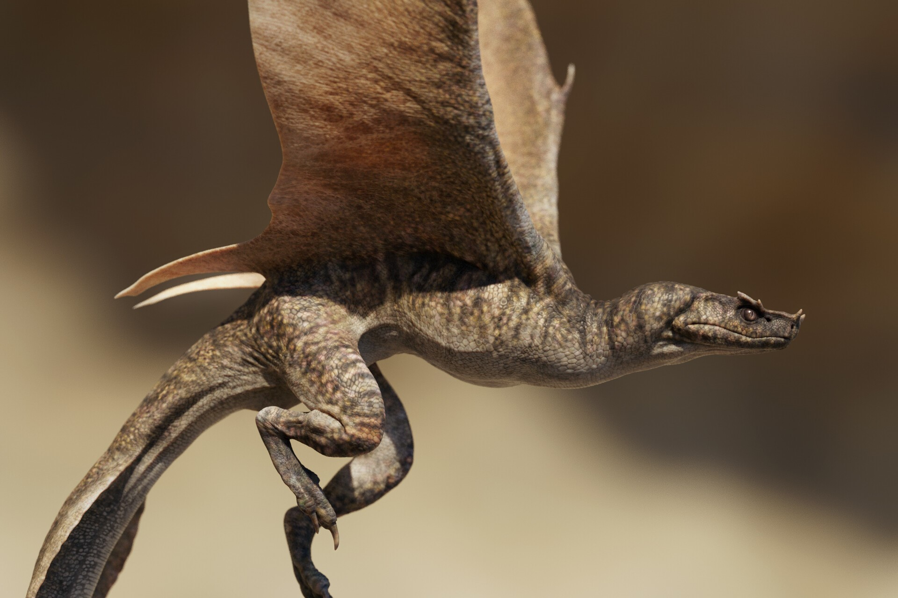
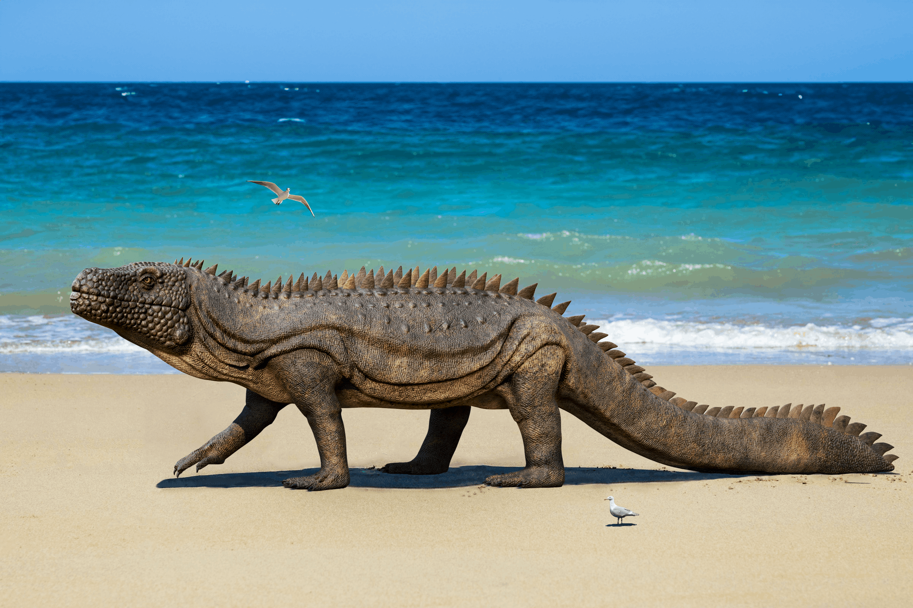
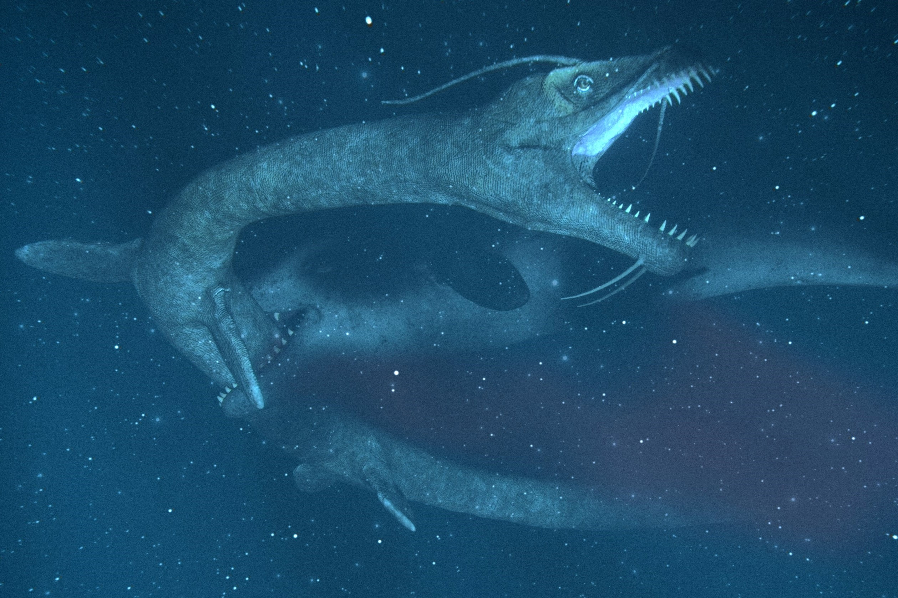
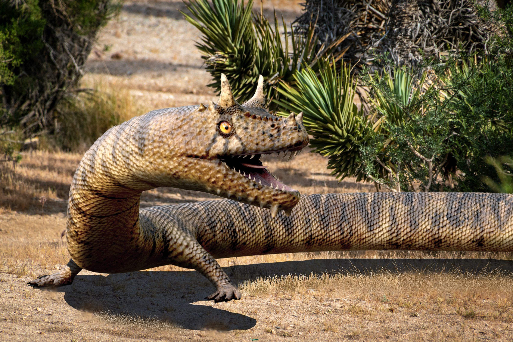
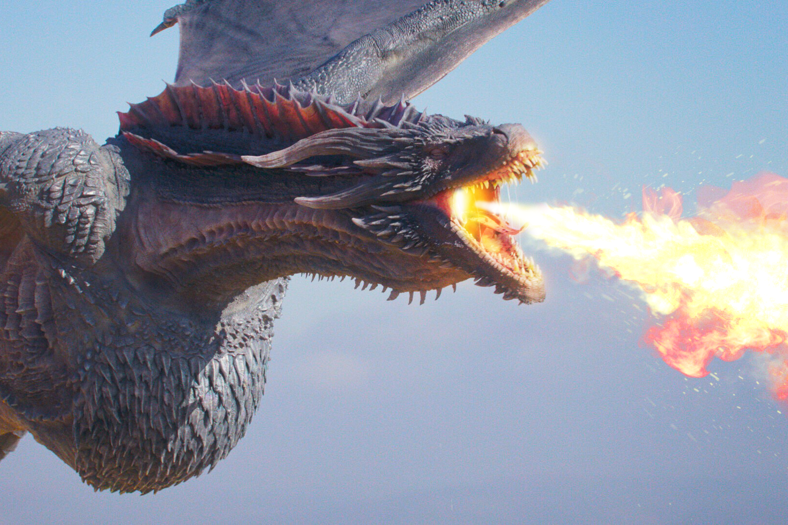

Wyverns
Habitat: islands, mountains, forests
Size: 4 to 8ft long, 5 to 10ft wingspans
Diet: fruit, fungi, small to mid-sized reptiles, mammals, birds
Wyverns are characterized by their ability to spit venom or acid, or possessing fangs, barbs, stingers, or other means to inject venom. They are closely related to true dragons, though these dragons are smaller and cannot breathe fire.

Drakes
Habitat: coasts, tundras, mountains, forests, grasslands
Size: 25 to 52ft long
Diet: fruit, fish, large and mid-sized animals
Drakes are large, heavyset, flightless dragons that can be terrestrial or semi-aquatic, lacking wings entirely. Unlike wyrms, they do not have a sprawling gait, but an erect one similar to mammals, with their limbs directly under their bodies. A few drake species can breathe fire, however, not to the extent of true dragons. Moreover, the majority of them have lost the ability.

Sea Serpents
Habitat: oceans, swamps, rivers, wetlands, lakes
Size: 16 to 72ft long
Diet: fish, frogs, squid (or giant squid), seals, cetaceans, shrimp, krill
This an aquatic family related to drakes. Sea serpents have four flippers and either fluked or paddle-like tails. Some species even have whiskers, similar to catfish, to navigate the waters. They do not have gills, so they must periodically surface for air.

Wyrms
Habitat: forests, deserts, jungles, rivers, swamps
Size: 3in to 30ft long
Diet: small to mid-sized reptiles or mammals, birds, insects
Wyrms may seem similar to drakes and sea serpents at first, however, they generally have much shorter limbs and longer bodies, and contain the only dragon species to have only two legs or lack limbs altogether. They are also land-dwelling, but can be semi-aquatic in some cases.

True Dragons
Habitat: mountains, wetlands, islands, forests, grasslands
Size: 12 to 50ft long, 18 to 82ft wingspans
Diet: fish, large animals, mid-sized animals (buffalo, deer, etc)
This is the most well-known family of dragons, and often what people think of when they hear the term "dragon." They are famous for breathing fire, being the largest out of all the types, and are also the most widespread.
True dragons can all breathe fire and fly, and they all possess one pair of wings and one pair of legs.
Their success can be attributed to their ability to spit fire, burning their prey. Cooked meat has several advantages, such as making it easier to consume, digest, and absorb nutrients.